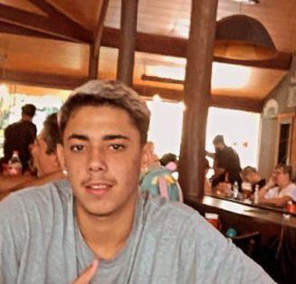

QUEM É ARTHUR?
Nascido em 2004, na cidade de Cachoeiro de Itapemirim,
Arthur desde muito novo já almejava alcançar muitas coisas
ao longo de sua vida
profissional, porém, com a vinda da
pandemia Arthur acabou deixando um pouco seus sonhos de lado,
acabou se aproximando de más companhias e não frequentava a escola.
Foi aí que sua mãe foi transferida para Guarapari
no ano de 2020, Arthur já estava acomodado onde estáva e não queria ir
de jeito nenhum, mas foi, e foi a melhor escolha que podia ter tomado.
Ainda com alguns máus hábitos, porém
sua mentalidade já não era mais a mesma, voltou a estudar em Guarapari,
e conseguiu recuperar todas suas notas que não tinha quando ainda estava em Cachoeiro.
MUDANÇA DE VIDA
Durante 7 meses Arthur morou em Guarapari, já estava acostumando com a rotina, conhecendo novas pessoas, tendo novos amigos, mas aquilo não era ainda o melhor pra ele. Então foi aí que Deus fez com que sua mãe fosse transferida de cidade mais uma vez. E dessa vez, uma cidade grande. Em Vitória, onde sempre sonharam. e vinha ai mais um processo de adaptação, nova escola, novas pessoas, nova mentalidade, novos objetivos e sonhos para seu futuro. Ingressou na Universidade em Vila Velha na metade do ano de 2023, no curso de Sistemas de Informação, e também conheceu o mercado digital e anúncios online, tendo a capacidade de ajudar os empreendedores e administradores a alavancar bruscamente o número de seus clientes, levando reconhecimento e aumentando o faturamento.
